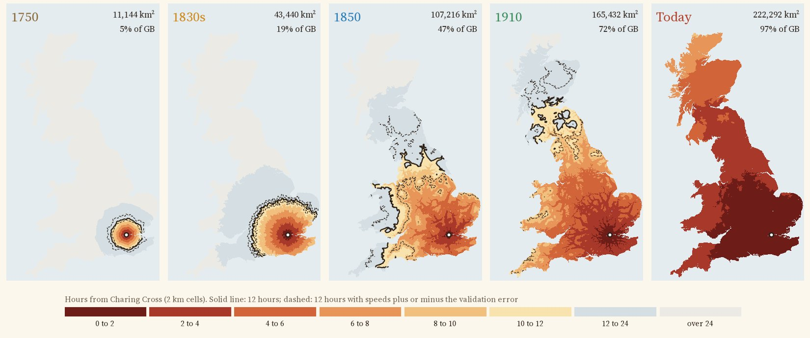
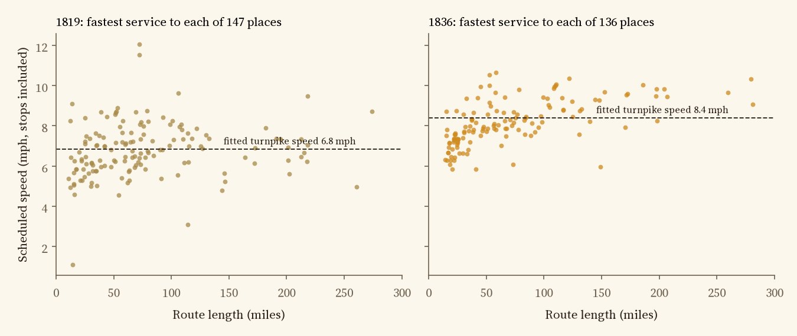
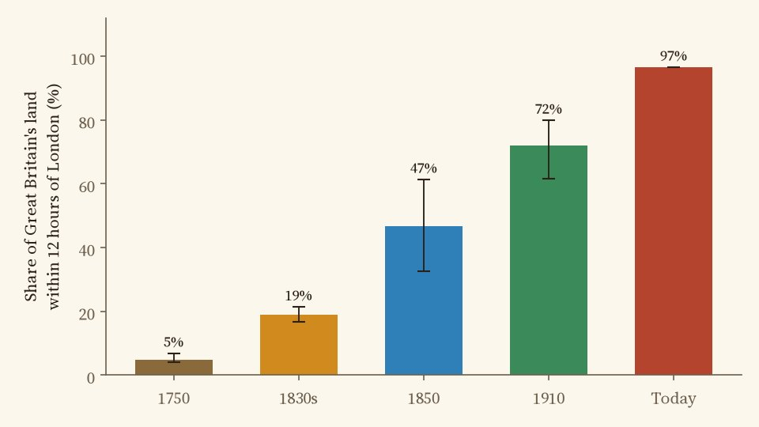
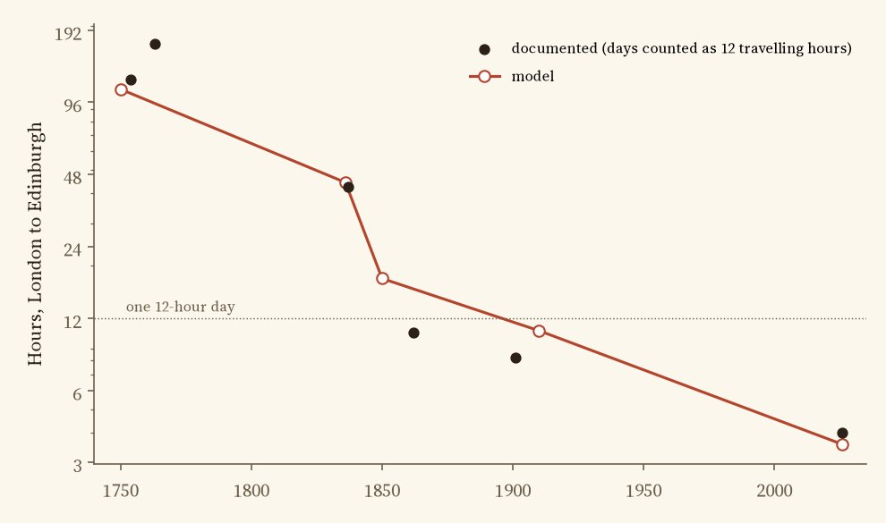
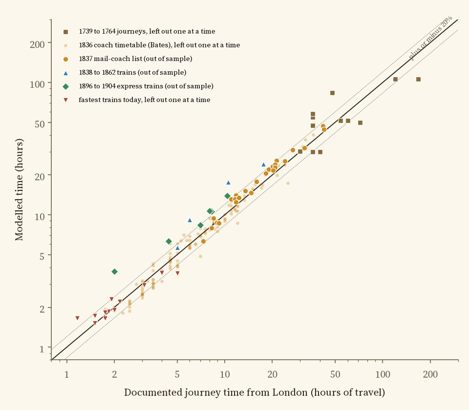

Leave Charing Cross at dawn and travel for twelve hours. Colours show the modelled hours to every 2 km square of Great Britain on the roads and railways of each era; the black line is the edge of the day and the dashed lines its uncertainty. Pick an era below; tap anywhere for the hours in every era.
Leave Charing Cross at dawn and travel for twelve hours. How far do you get? In 1754 a coach promised Edinburgh in ten days; in 1837 the Edinburgh mail took just over 42 hours; by the early 1900s the Flying Scotsman took eight and a quarter, and today's fastest train takes four. Those famous journeys do not show the whole map, so I built a model of Great Britain's roads and railways in five eras and drew the edge of the day.
The model's 1750 coach runs at about 3.6 miles an hour on the turnpikes of the time, a speed fitted to a dozen dated journeys from London between 1739 and 1764, counting a travelling day as twelve hours. Roads that were not yet turnpikes run at 0.6 of that speed. The day ends around 69 km of road from London, and everything inside it covers 11,144 km², 5% of the island. Edinburgh is about 9 travelling days away. Treat this map as a rough sketch: the model misses the dated journeys by a median of 28% when each one is left out of the fit, above the 25% limit set in the written plan, so by its own test it fails.

Hours of travel from Charing Cross in each era; the black line is twelve hours, the dashed lines show it with speeds plus or minus the model's error.
For the 1830s the coach speed is fitted to the timetables of 136 coach services from London in 1836, compiled by Alan Rosevear, Dan Bogart and Leigh Shaw-Taylor and mapped onto the turnpike roads of the day. The best fit is 8.4 miles an hour, stops included. A day now reached 19% of Britain: Leicester, 143 km away, in 11.7 hours. Tested on a separate list of the mail coaches that left London every night in 1837, which it never saw, the model is out by a median of 12%. The Edinburgh mail, timed at 42.4 hours, comes out at 44.2.

The fastest coach from London to each place in 1819 and 1836, with the fitted speed on a turnpike.
By 1851 there were about 6,300 miles of railway. Trains run at the average speeds Tim Leunig measured from the timetables of 1850, 26 miles an hour along the track on main lines and less on branches, with half an hour's wait for each train and coaches feeding the stations. The day reached 47% of Britain, Holyhead, 366 km away, in 11.2 hours. This is a lower bound: these average trains are slower than the documented expresses by a median 46% (four journeys). In about fifteen years the area within a day of London grew at least 2.5 times, and its shape changed from a blob to a star along the main lines.
There is no public map of the 1910 railway network, so I rebuilt it from the 1851 lines, today's lines and straight links between stations that closed after 1910 (dashed on the map). With Leunig's 1910 speeds a day reached at least 72% of the island, again a lower bound (the model is 34% slower than six documented expresses). Today, by car or train, it is 97%: every mainland town on the map, and only islands are left outside. Try Inverness, Penzance or Holyhead.

Share of land within twelve hours; whiskers show speeds plus or minus the model error.

London to Edinburgh: documented journeys (days counted as twelve travelling hours) and the model.
Every speed is either fitted to cited journey times or taken from published work, and every era is tested on journeys it did not see. The 1830s coach model holds up well (a median error of 9% against the 1836 timetables, 12% against the 1837 mails). 1750 fails the 25% limit set in advance (28%) and is a rough sketch. Because the trains are average trains, the railway maps are slower than the famous expresses, by a median 46% in 1850 and 34% in 1910, on only four and six journeys, so the 1850 and 1910 maps are lower bounds. Today's fitted train misses twelve fastest times by a median 5%.

Modelled against documented times. Dotted lines: within 20%.
Roads. For 1750 and the 1830s, the turnpike and main road map of England and Wales by Rosevear, Bogart, Shaw-Taylor and Satchell, which records whether each stretch was a turnpike in each decade. Scotland is not in it, so its main roads come from today's trunk and primary roads. In 1850 and 1910, feeder coaches use the roads of 1838. Today: OpenStreetMap motorways and A and B roads at fixed typical speeds.
Railways. The Cambridge Group's 1851 rail lines; for 1910, those lines, today's railways and inferred links between stations closed after 1910; today, OpenStreetMap. Trains can be boarded near stations open in each era.
The model. Britain is cut into 2 km squares; away from the networks the traveller walks at 3 miles an hour. Shortest paths from Charing Cross are found across every square, road and line. The analysis was pre-specified in a written plan before any travel times were computed.
What this cannot say. There are no timetables, so a coach or train is assumed to be there when you are, apart from a half-hour wait. Weather, hills, fares and the price of a seat are ignored, and in 1750 few people could afford a coach at all. The inferred lines of 1910 are straight. And the twelve hour day is a choice: an eight or sixteen hour day moves the line a long way.